数据 Data
事实保留在原始数据源中，例如关系数据库。

VKGIS ALL YOU NEEDVIRTUAL KNOWLEDGE GRAPHS / OBDA
让数据留在原处，让知识连接起来。
探索虚拟知识图谱的概念、工具与研究，
从一份映射开始，建立统一的语义视图。
01 / THE IDEA
虚拟知识图谱在原有数据之上提供图谱视图，无须先把全部数据复制为独立 RDF 图。以 Ontop 为例，SPARQL 查询会被转换为 SQL，在底层数据库中执行。
阅读 Key Concepts ↗事实保留在原始数据源中，例如关系数据库。
连接 SQL 源查询与 RDF 目标模式，描述记录如何对应实体、属性和关系。
补充领域概念与关系，支持系统能力范围内的语义约束和推理。
02 / RESOURCE ATLAS
从基础规范到前沿研究。
按你的问题，选择合适的资源。
W3C 关系数据库到 RDF 的可定制映射标准；既可用于虚拟访问，也可用于物化，并不限定执行方式。
从表、列和约束得到基础 RDF 表示；适合理解映射引导生成，不等于与业务本体完成语义对齐。
理解 OBDA 本体建模与查询重写的重要配置文件，不代表任意 OWL 2 推理都被支持。
面向 RDF 的查询语言；实际引擎能力以其兼容性文档为准。
数据库输入、映射与预期 RDF 输出，适合符合性和回归测试，不是性能基准。
VKG 查询引擎、部署配置、开发与问题反馈。
选择 Docker、CLI 或 Protégé 插件等入口；新项目优先考虑 HTTP SPARQL endpoint。
部署 endpoint、执行查询、bootstrap 本体和映射、处理映射文件；自动生成结果仍需检查业务语义。
在本体编辑环境中理解和编写映射。旧 Mapping Assistant 面板已经移除，不应照搬旧界面说明。
在 Ontop 层定义关系视图，整理复杂源结构或适配不可修改的数据库；Protégé 插件目前不支持 lenses。
核对 SPARQL、R2RML、GeoSPARQL 等功能边界。
寻找行业映射、教程与部署示例；逐仓库核对许可证和版本。
大学数据库、映射、endpoint、查询与进阶主题。
首推入门主线；配套文件 ↗是文档示例镜像，文档源在 ontop-website ↗。
主键、外键、IRI 模板与映射工程。
关注语义正确性及生成 SQL 的性能，而不只是语法通过。
南蒂罗尔旅游住宿数据，数据库、本体、映射练习、SPARQL 与解答。
部分说明使用 Ontop 4.1.0 等历史版本。
基因表达案例，数据库 dump、本体、OBDA/R2RML 映射、查询与部署说明。
分目录许可：数据 CC0，文字 CC BY 4.0，代码 Apache-2.0；部分命令较旧。
天气、交通传感器数据与可视分析，结合 PostgreSQL/PostGIS 和 Ontop。
Apache-2.0；历史环境需适配。
德国 DLM250 地形数据、PostGIS、Ontop/SPARQL 与 QGIS 流程。
项目为 fork，数据需外部获取；许可证与下载可用性需进一步确认。
SQL Server 业务数据、R2RML 映射、查询及虚拟/物化部署示例。
含历史 Suite 项目；使用前核对依赖及许可。
数据湖上的虚拟访问，结合 Trino、Iceberg、Nessie 和 MinIO。
研究 playground / fork，不承诺直接一键运行。
关系数据库到本体的自动/半自动映射质量。
不是查询延迟基准；复现时固定场景与版本。
OBDA 查询与规模评测，提供关系数据、本体、映射及 SPARQL。
基于历史 NPD 数据快照，不是实时能源数据服务。
根据源数据库和放大倍数生成关系数据，面向 OBDA 评测的数据扩展。
是数据生成器，不是查询引擎，也不自动构成完整评测体系。
电商场景的 SPARQL endpoint 与跨架构性能比较，涉及 RDF stores 和关系数据包装器。
经典历史工具，不专门测试本体推理。
不同查询结构与数据分布下的 RDF/SPARQL 性能。
通用 RDF 基准；用于 VKG 必须说明关系模式、映射和适配。
概念、系统与应用的全景入口。
OBDA 框架、查询回答、映射管理与研究挑战。
系统、优化与应用研究的持续入口。
LLM 辅助 VKG 构建，涉及映射模式、本体补全、映射生成与评估。模型 API、数据库及工具配置需自行核验；不保证当前可直接复现。
地理问答与 LLM 的相关研究。其架构含 PostGIS、Neo4j 和 ChromaDB，不能简单等同于 Ontop 引擎或纯虚拟访问案例。
把映射扩展到更多异构格式。所链接规范页标注 Unofficial Draft，并非 W3C Recommendation。
便于阅读和编写的 YAML 风格映射语法。
浏览器中的映射编辑与 RDF 生成体验。
试试更短的关键词，或切换到全部分类。
VKG 是数据访问方式；Ontop 是开源 VKG/OBDA 引擎；Ontopic Studio / Suite 是商业产品线，不是 Ontop 的别名。资源指南记录的当前产品状态和历史资料说明，请见完整说明。
RML、YARRRML 与 Matey 有助于映射工程，但 RDF 生成或物化流水线不自动等于实时 VKG 查询服务。外部项目由各自维护者独立维护，本组织不代表这些项目。
03 / START SMALL
不用一次读完所有资料。
先建立一个小而完整的工作流。
分清数据源、映射、本体与查询层。
Key Concepts ↗跟随大学数据库教程，建立 endpoint。
Ontop 官方教程 ↗检查 IRI、主外键与生成的 SQL。
Mapping Engineering ↗映射质量看 RODI；查询规模看 NPD 与 VIG。
探索评测入口 ↗04 / BUILD IN THE OPEN
本站的内容来源。按用途整理标准、工具、教程、基准和论文，记录适用范围与使用提醒。
浏览资源仓库ORGANIZATION PROFILE ↗组织介绍与视觉标识。认识 VKG is all you need，从公开资源开始交流与探索。
查看组织档案发现一篇好论文，或一处需要更正的说明？
提交资源与纠错 ↗